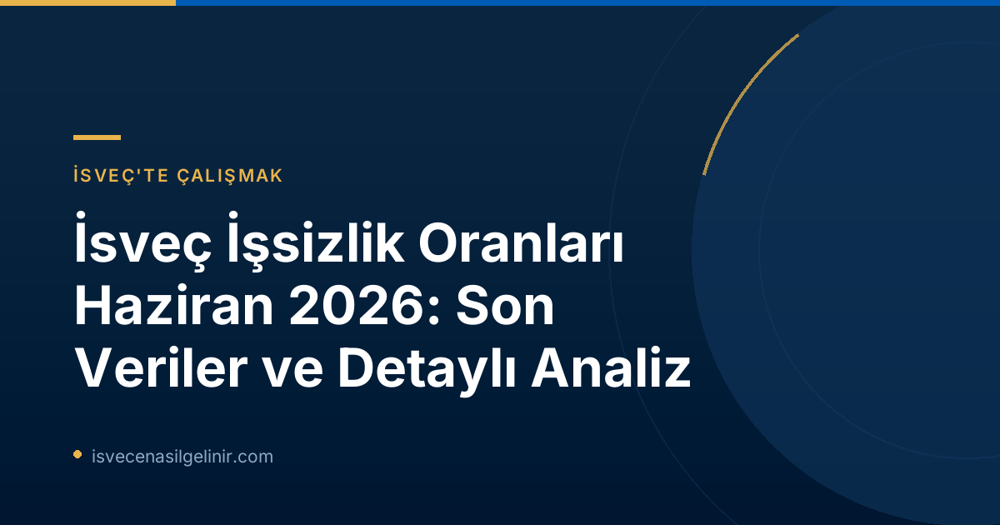

İsveç İş Piyasasında Genel Durum: Haziran 2026 Raporu
Arbetsförmedlingen'in 16 Temmuz 2026 tarihli duyurusuna göre, İsveç'te işsizlik oranlarındaki düşüş eğilimi Haziran 2026'da da sürdü. Ülke genelinde işsiz sayısında belirgin bir azalma kaydedilirken, bu durum kurumun daha önceki tahminleriyle de uyumlu. Özellikle son bir yılda yaşanan gelişmeler, İsveç ekonomisindeki olumlu değişimin bir göstergesi olarak değerlendiriliyor. İsveç'te yaşamak, çalışmak ve geleceğini burada kurmak isteyenler için iş piyasasındaki bu olumlu trendler umut verici nitelikte. İsveç vatandaşlık süreçleri ve ilgili testler hakkında bilgi arıyorsanız, İsveç Vatandaşlık Testi sayfamızı ziyaret edebilirsiniz.İşsizlik Oranlarında Yıllık Karşılaştırma
Haziran 2026 verileri, bir önceki yılın aynı dönemine kıyasla önemli iyileşmeler olduğunu ortaya koyuyor. Aşağıdaki tablo, bu karşılaştırmalı verileri daha net bir şekilde sunmaktadır:| Veri Kalemi | Haziran 2025 | Haziran 2026 | Değişim |
|---|---|---|---|
| Kayıtlı İşsiz Oranı | %6,9 | %6,4 | -%0,5 puan |
| Toplam Kayıtlı İşsiz Sayısı | 366.496 | 344.357 | -22.139 kişi |
| 18-24 Yaş İşsizlik Oranı | %7,8 | %7,3 | -%0,5 puan |
| 18-24 Yaş İşsiz Sayısı | 41.939 | 39.134 | -2.805 kişi |
| 12 Ay veya Daha Uzun Süreli İşsiz Sayısı | 151.979 | 148.497 | -3.482 kişi |
| Açık İşsiz Sayısı | 193.650 | 201.528 | -7.878 kişi |
| Aktivite Desteği Programındaki Kişi Sayısı | 150.707 | 164.968 | -14.261 kişi |
| Yeni İş Arayan Olarak Kaydolan Kişi Sayısı | 42.980 | 44.099 | -1.119 kişi |
| İş Bulan Kişi Sayısı | 35.673 | 32.405 | +3.268 kişi |
| İşten Çıkarılma Bildirimi Alan Kişi Sayısı | 2.857 | 4.606 | -1.749 kişi |
Demografik Gruplara Göre İşsizlik Analizi
İşsizlikteki düşüş, İsveç toplumunun büyük bir kesimini kapsarken, farklı demografik gruplarda da olumlu gelişmeler gözlemleniyor.Cinsiyet ve Köken Bazında Gelişmeler
Haziran 2026 itibarıyla, işsizlik oranlarındaki düşüş hem erkeklerde hem de kadınlarda kendini gösterdi. Ayrıca, hem İsveç doğumlu hem de yurt dışında doğmuş kişiler arasında işsizlikte azalma yaşandı. Ancak, özellikle Avrupa dışı ülkelerde doğmuş uzun süreli işsizler, yerli uzun süreli işsizlere kıyasla daha hızlı bir iyileşme kaydetti.Genç İşsizlik Oranları (18-24 Yaş)
Genç işsizliği de İsveç genelindeki olumlu trende uyum sağladı. Haziran 2026'da 18-24 yaş arasındaki kayıtlı işsiz genç sayısı 39.000 civarında olup, bu rakam bir önceki yılın aynı dönemine göre yaklaşık 3.000 kişilik bir düşüşü ifade ediyor. Bu, gençlerin iş piyasasına entegrasyonunda kaydedilen ilerlemeyi göstermektedir.Uzun Süreli İşsizlikteki İyileşme
Bir yıldan daha uzun süredir işsiz olan kişi sayısı da azalma eğiliminde. Haziran 2026'da bu gruptaki işsiz sayısı 148.000 olarak kaydedildi. Bu, 2025'teki 152.000 kişilik rakama göre önemli bir iyileşmedir. Dikkat çekici bir diğer nokta ise, uzun süreli işsizlerin yaklaşık yarısının Avrupa dışı ülkelerde doğmuş olması ve son dönemde bu grubun iş bulma konusunda daha pozitif bir gelişim sergilemesidir.İsveç'in Bölgelerine Göre İşsizlik Haritası
İşsizlik oranları, İsveç genelinde düşüş gösterse de, bölgesel farklılıklar hala devam ediyor. Aşağıdaki bilgi kutusu, en yüksek ve en düşük işsizlik oranlarına sahip illeri özetlemektedir:Bölgesel İşsizlik Verileri (Haziran 2026)
- En Yüksek İşsizlik Oranları:
- Skåne: %8,4
- Södermanland: %8,0
- Västmanland: %7,8
- En Düşük İşsizlik Oranı:
- Norrbotten: %3,4
İş Piyasasındaki Hareketlilik ve İstihdam
Arbetsförmedlingen'in raporu, iş piyasasındaki genel hareketliliği ve yeni istihdam fırsatlarını da yansıtmaktadır. Haziran ayında yaklaşık 43.000 kişi iş aramak için Arbetsförmedlingen'e kaydolurken, bu sayı önceki yılın aynı dönemine göre 1.000 kişi daha az. Öte yandan, Arbetsförmedlingen aracılığıyla iş bulanların sayısı 36.000 kişiye ulaşarak, Haziran 2025'e göre 3.000 kişilik bir artış gösterdi. Ayrıca, işten çıkarılma bildirimi alan kişi sayısının 2.857'ye düşmesi de iş piyasasında olumlu bir sinyal olarak kabul ediliyor.İstatistiklerin Kaynağı ve Farklılıklar
Bu raporda sunulan veriler, Arbetsförmedlingen'in kendi faaliyet istatistiklerine dayanmaktadır. Kurum, kayıtlı işsizler ve yeni bildirilen boş pozisyonlar gibi kendi kayıt verilerini kullanır. Ancak, Arbetsförmedlingen'in bu istatistiklerinin İsveç'in resmi istatistik kurumu olan İsveç İstatistik Kurumu (SCB) tarafından yayımlanan İşgücü Anketleri (AKU) ile farklılık gösterebileceğini belirtmek önemlidir. Ayrıca, 2026 istatistikleri 16-66 yaş aralığını kapsarken, 2025 verileri 16-65 yaş aralığını kapsamaktadır.Gelecek Beklentisi
Arbetsförmedlingen, Temmuz 2026 faaliyet istatistiklerini 13 Ağustos 2026 tarihinde, saat 06:00'da (İsveç saatiyle) yayımlayacağını duyurdu. Bu yeni veriler, iş piyasasındaki güncel eğilimleri daha da netleştirecek ve gelecek dönem projeksiyonları için önemli ipuçları sunacaktır. İsveç iş piyasasındaki gelişmeleri yakından takip etmek, özellikle İsveç'e göç etmeyi düşünenler için büyük önem taşımaktadır.Referanslar
İsveç'te Yeni Bir Hayat İçin Adım Atın!
İsveç'te çalışmak, yaşamak veya vatandaşlık almakla ilgili merak ettiğiniz her şeyi öğrenin. Uzman danışmanlarımızla iletişime geçin veya web sitemizdeki kapsamlı rehberlerimizi inceleyin.